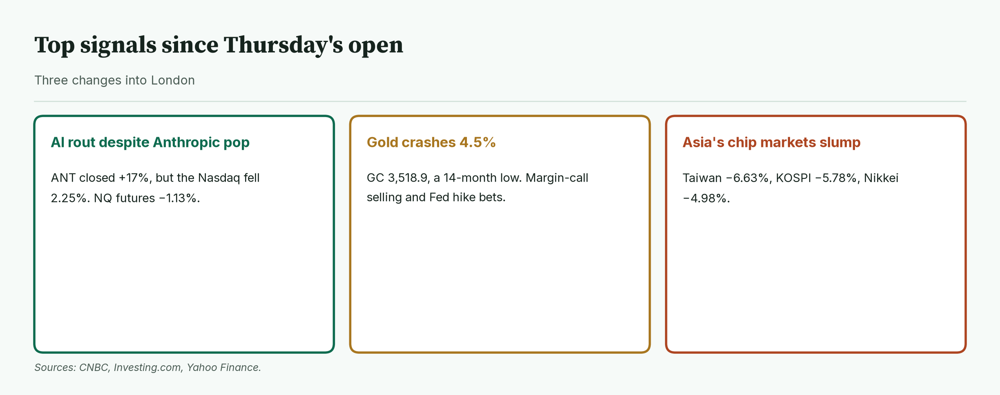
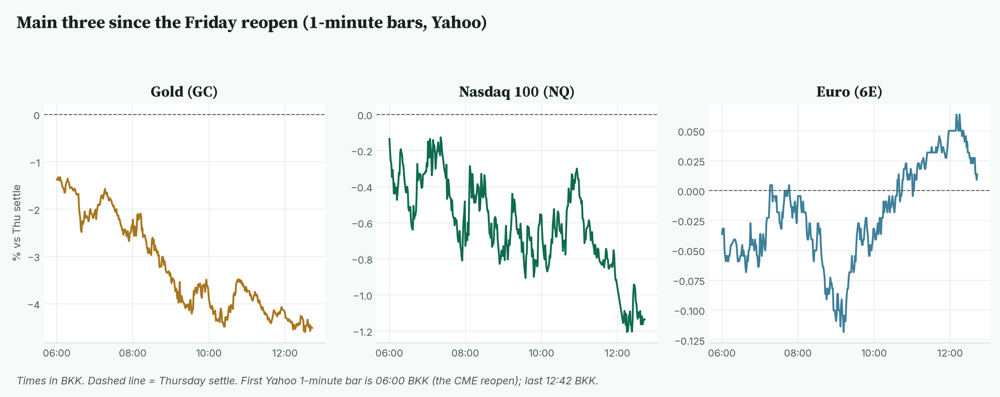
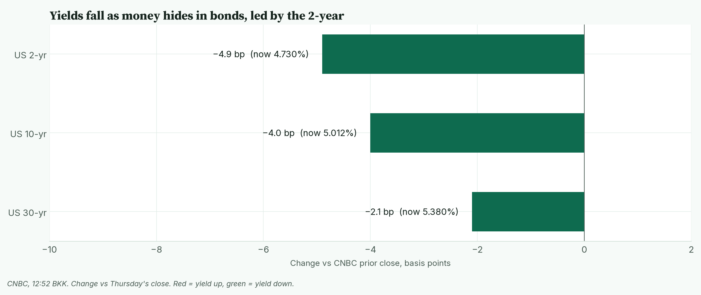
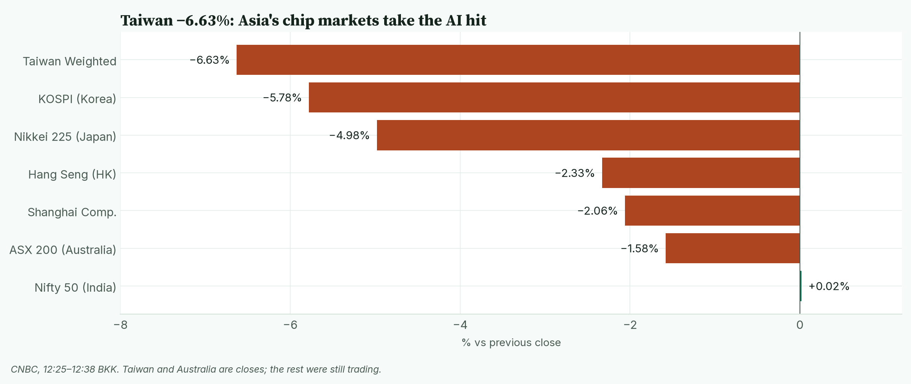
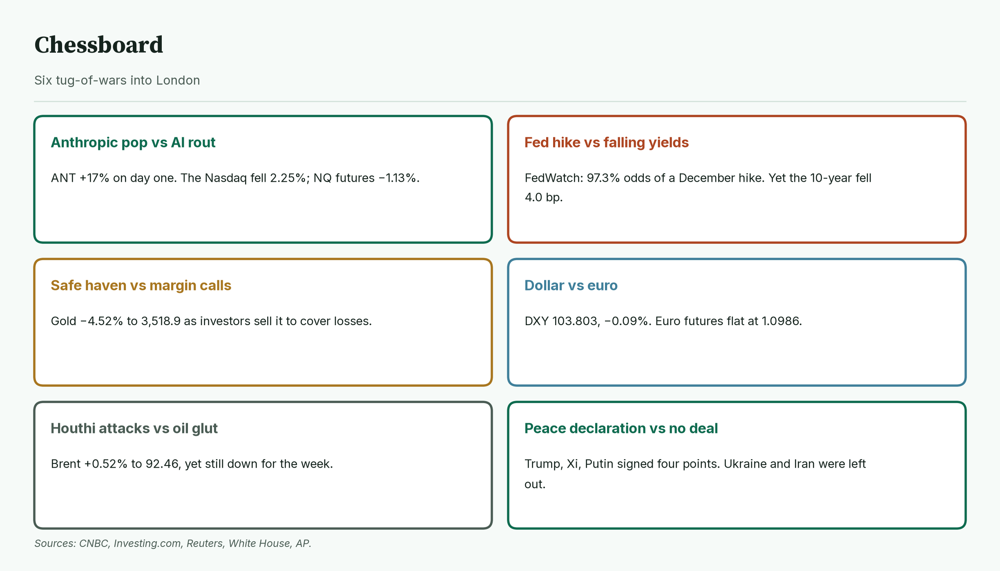
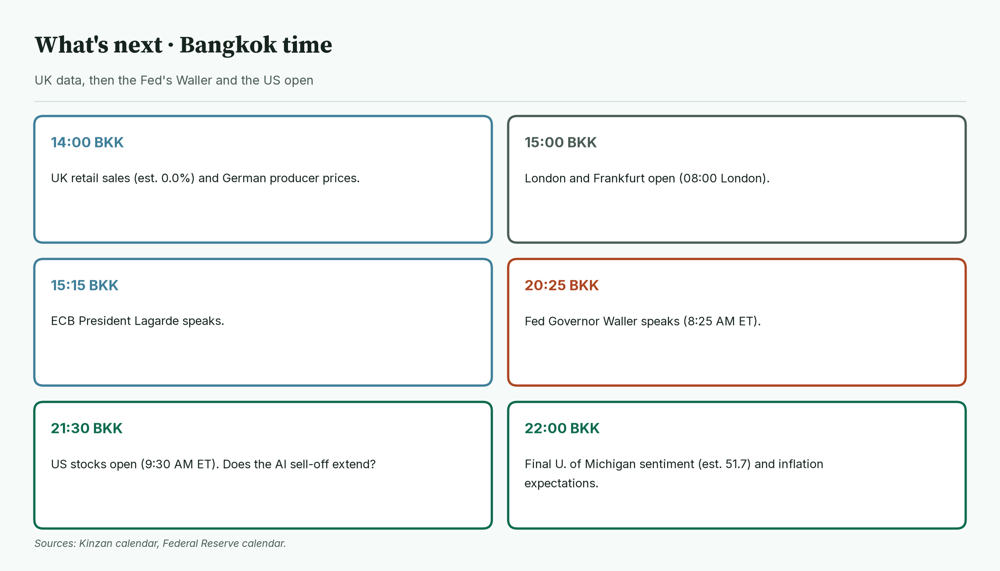
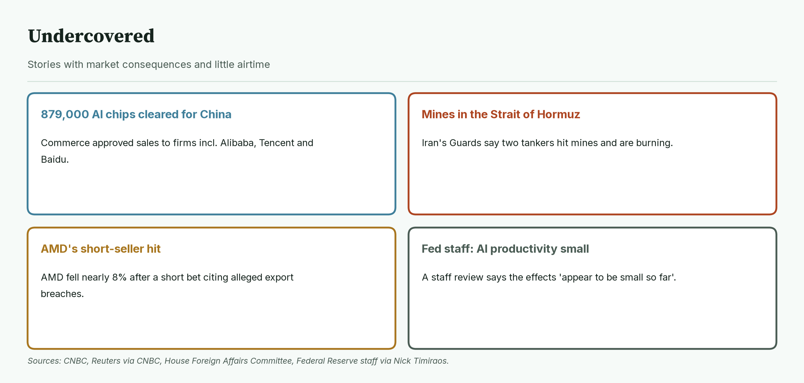
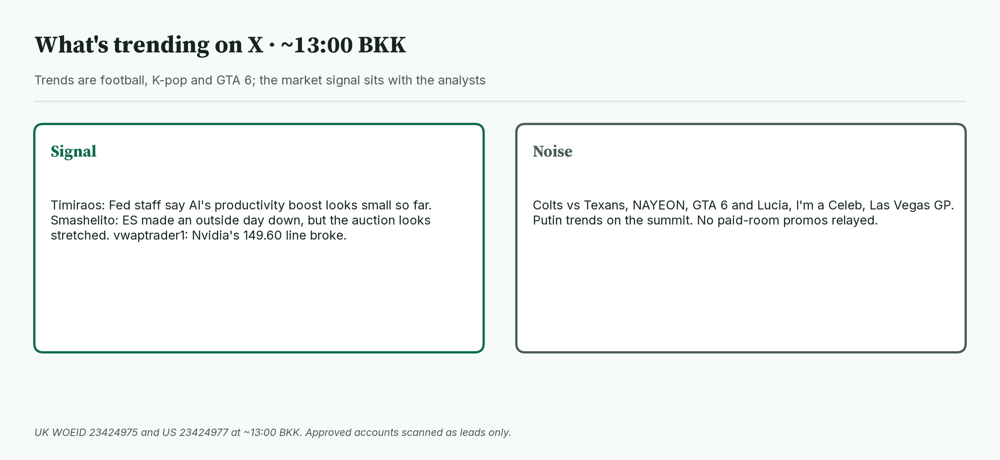

April · Market Intel, pre-London · Fri Nov 20, 2026 · ~13:00 BKK / ~06:00 London
Headline: The AI sell-off went global after Anthropic's debut, and gold futures crashed to 3,518.9 (−4.52%), a 14-month low. Nasdaq futures are 26,300.25 (−1.13%). Euro futures are flat at 1.0986 (+0.01%). Fed Governor Waller at 20:25 BKK and the US open at 21:30 BKK decide the session.
So what: this is forced selling, not a safe-haven trade. Investors are dumping gold to cover tech losses while betting on a December Fed hike.
1) Top signals Three changes since Thursday's open. The AI rout spread, gold crashed and Asia's chip markets slumped. |
 Caption: Futures at 12:42 BKK versus Thursday's settle. Gold leads the losses; the euro barely moved. The VIX tile is Thursday's close.
Caption: Futures at 12:42 BKK versus Thursday's settle. Gold leads the losses; the euro barely moved. The VIX tile is Thursday's close.
 Caption: Three changes since Thursday's open. The AI rout spread, gold crashed and Asia's chip markets slumped.
Caption: Three changes since Thursday's open. The AI rout spread, gold crashed and Asia's chip markets slumped.
- Anthropic rose 17% on day one, but the Nasdaq fell 2.25% (CNBC).
- Gold futures hit 3,514.9 at 12:16 BKK, the lowest since September 2025 (Yahoo, Investing.com).
- Taiwan fell 6.63%, KOSPI 5.78%, Nikkei 4.98% (CNBC).
2) Main instruments The three main contracts since the Friday reopen, as a % move from Thursday's settle. Gold slid all morning; Nasdaq dropped late. The euro is flat. |
 Caption: The three main contracts since the Friday reopen, as a % move from Thursday's settle. Gold slid all morning; Nasdaq dropped late. The euro is flat.
(Quotes are Yahoo Finance futures at 12:42 BKK (05:42 London), matching CNBC. Session highs and lows use Yahoo 1-minute bars from the 06:00 BKK CME reopen (18:00 New York Thursday). The first bar is 06:00 BKK.)
Caption: The three main contracts since the Friday reopen, as a % move from Thursday's settle. Gold slid all morning; Nasdaq dropped late. The euro is flat.
(Quotes are Yahoo Finance futures at 12:42 BKK (05:42 London), matching CNBC. Session highs and lows use Yahoo 1-minute bars from the 06:00 BKK CME reopen (18:00 New York Thursday). The first bar is 06:00 BKK.)
- Gold futures (GC, Dec): 3,518.9, −4.52%, at 12:42 BKK. Driver: a firm Fed hike outlook plus investors selling gold to meet margin calls (demands to top up losing positions) from the tech slide (Investing.com). Thursday's settle was 3,685.5. Today's range is 3,514.9 (12:16 BKK) to 3,638.1 (06:06 BKK). It sits near the low. Gold is on track for a 9% weekly drop, its biggest since March (Investing.com).
- Nasdaq 100 futures (NQ, Dec): 26,300.25, −1.13%, at 12:42 BKK. Driver: the AI sell-off kept going after Anthropic's debut failed to lift tech (CNBC). Thursday's settle was 26,600.25. Today's range is 26,271.00 (12:16 BKK) to 26,603.50 (06:00 BKK). It sits near the low.
- Euro futures (6E, Dec): 1.0986, +0.01%, at 12:42 BKK. Driver: the dollar eased slightly as US yields fell, but stays near a 19-month high (CNBC, Investing.com). Thursday's settle was 1.09845. Today's range is 1.09715 (09:08 BKK) to 1.0992 (12:11 BKK). It is a tight range.
- Takeaway: gold is the pressure valve. When stocks fall this hard, it gets sold for cash.
Context. The dollar index (DXY, the dollar against six major currencies) is 103.803, −0.09% (CNBC, 12:52 BKK). The 10-year US yield (what the US government pays to borrow for 10 years) is 5.012%, down 4.0 basis points (CNBC, 12:52 BKK; a basis point is 0.01 percentage point). The VIX (the "fear gauge" built from S&P 500 option prices) closed Thursday at 28.44, +15.80% (CNBC). US oil (CL, December) is 83.76, +0.66% (CNBC, 12:09 BKK; December expires soon, January is 82.83). S&P 500 futures (ES) are 7,152.00, −0.63% (Yahoo, 12:42 BKK). Bitcoin is $61,913, −0.27% versus CNBC's previous close (CNBC/Coin Metrics, 12:52 BKK).
3) Overnight US session
- Stocks reversed hard. The Nasdaq Composite fell 2.25% to 23,879.20 after being up as much as 2%. The S&P 500 fell 2.02% to 7,175.83. The Dow lost 1,101.11 points to 49,097.06, its first close below 50,000 since June (CNBC).
- Anthropic opened at $111.50 and closed at $97.17, up 17% from its $83 IPO price. Stocks hit their lows the moment it began trading (CNBC).
- Nvidia gave up an early gain. It is down 28% this month as it deals with CEO Jensen Huang's resignation (CNBC).
- AMD fell nearly 8% after Hunterbrook disclosed a short bet citing alleged export-control breaches (CNBC).
- The VIX hit nearly 29, its highest since March (CNBC).
- Jobless claims rose 1,000 to 203,000, above the 197,000 forecast. The Philly Fed factory index fell to 6.3 from 20.9 (Labor Department, Reuters, Philadelphia Fed).
- Takeaway: the market sold the news. A giant IPO did not fix doubts about AI spending.
4) Rates, FX and oil Yields fell across the curve in Asia, most at the short end. Money is hiding in bonds even as the Fed leans to a hike. |
 Caption: Yields fell across the curve in Asia, most at the short end. Money is hiding in bonds even as the Fed leans to a hike.
Caption: Yields fell across the curve in Asia, most at the short end. Money is hiding in bonds even as the Fed leans to a hike.
- CNBC, 12:52 BKK: 2-year 4.730% (−4.9 bp), 10-year 5.012% (−4.0 bp), 30-year 5.380% (−2.1 bp).
- The Fed. Markets price 97.3% odds of a 25 bp December hike (CME FedWatch via Investing.com). Philadelphia Fed President Anna Paulson said Friday another hike is needed (Investing.com).
- Dollar. DXY is 103.803. EUR/USD is 1.0977 (CNBC, 12:52 BKK).
- Yen. USD/JPY is 159.15 (CNBC, 12:52 BKK), slightly lower on the risk-off mood.
- Oil. Brent (January) is 92.46, +0.52% (CNBC, 12:42 BKK). Houthi missiles hit Riyadh, but Brent is still set for a 3.5% weekly fall (Reuters via CNBC).
- Takeaway: falling yields would normally help gold. Today they don't, which tells you the selling is forced.
5) Why it matters Asia's chip-heavy markets took the worst of the AI hit. India held flat. Taiwan and Australia are closes; the rest are CNBC prints from 12:25 to 12:38 BKK. |
 Caption: Asia's chip-heavy markets took the worst of the AI hit. India held flat. Taiwan and Australia are closes; the rest are CNBC prints from 12:25 to 12:38 BKK.
Caption: Asia's chip-heavy markets took the worst of the AI hit. India held flat. Taiwan and Australia are closes; the rest are CNBC prints from 12:25 to 12:38 BKK.
- Taiwan fell 6.63% to 35,877.63 (CNBC, close print). TSMC fell 4.76% (CNBC).
- SoftBank plunged 16.16%. Tokyo Electron fell 7.19%. SK Hynix fell 6% and Samsung 4.7% (CNBC).
- Hong Kong −2.33%, Shanghai −2.06%, ASX 200 −1.58%. Nifty is +0.02% (CNBC).
- Silver futures fell 7.05% to 41.23 (CNBC, 12:42 BKK).
- Mentor: in a sharp sell-off, funds sell what they can, not what they want. Gold and silver are easy to sell, so they drop alongside stocks even though they are "safe havens."
- Takeaway: London opens into a global de-risking, with Asian tech and metals hit hardest.
6) Chessboard Six tug-of-wars into London. The AI trade and the Fed move the main three fastest. |
 Caption: Six tug-of-wars into London. The AI trade and the Fed move the main three fastest.
Caption: Six tug-of-wars into London. The AI trade and the Fed move the main three fastest.
- Anthropic pop vs AI rout. ANT +17% on day one. The Nasdaq fell 2.25%; NQ futures −1.13%.
- Fed hike vs falling yields. FedWatch shows 97.3% odds of a December hike. Yet the 10-year fell 4.0 bp.
- Safe haven vs margin calls. Gold −4.52% to 3,518.9 as investors sell it to cover losses (Investing.com).
- Dollar vs euro. DXY 103.803, −0.09%. Euro futures flat at 1.0986.
- Houthi attacks vs oil glut. Brent +0.52% to 92.46, yet still down for the week (Reuters via CNBC).
- Peace declaration vs no deal. Trump, Xi and Putin signed a four-point declaration in Shenzhen. It left out Ukraine and Iran (White House, Reuters, DW).
- Takeaway: the board leans risk-off. Fed hike bets and AI doubts are pushing the same way.
7) Leading indicators (BKK times, ET in brackets) UK data first, then the Fed's Waller and the US open. Michigan sentiment closes out the week. |
 Caption: UK data first, then the Fed's Waller and the US open. Michigan sentiment closes out the week.
Caption: UK data first, then the Fed's Waller and the US open. Michigan sentiment closes out the week.
- 14:00 (2:00 AM ET): UK retail sales, estimate 0.0%, and German producer prices (Kinzan calendar).
- 15:00: London and Frankfurt open.
- 15:15 (3:15 AM ET): ECB President Lagarde speaks (Kinzan calendar).
- 20:25 (8:25 AM ET): Fed Governor Waller speaks at the College Fed Challenge (Federal Reserve). This is the Fed decider.
- 21:30 (9:30 AM ET): US stocks open. Day two for ANT and Nvidia's next move. This is the tech decider.
- 22:00 (10:00 AM ET): final University of Michigan sentiment, estimate 51.7, and inflation expectations (Kinzan calendar).
- Takeaway: any Waller hint at a half-point hike would press gold again.
8) Scenarios and levels
- Risk-off continues (tech slides, hawkish Fed). Watch GC 3,514.9, NQ 26,271.00 and 6E 1.09715 for breaks lower.
- Steady (the base case). Ranges likely hold. GC 3,514.9 to 3,638.1, NQ 26,271.00 to 26,603.50, 6E 1.09715 to 1.0992.
- Relief bounce (oversold rebound). NQ could test 26,603.50; gold could recover toward 3,638.1.
- These are possible paths, not forecasts.
9) Undercovered Four stories with little airtime. They touch chip exports, oil shipping, AMD and the AI payoff. |
 Caption: Four stories with little airtime. They touch chip exports, oil shipping, AMD and the AI payoff.
Caption: Four stories with little airtime. They touch chip exports, oil shipping, AMD and the AI payoff.
- The US cleared more than 879,000 AI chips for China. Buyers include Alibaba, Tencent and Baidu (CNBC, House Foreign Affairs Committee).
- Two tankers hit mines in the Strait of Hormuz and are burning, Iran's Revolutionary Guards say (Reuters via CNBC).
- AMD's short-seller hit. Hunterbrook's short bet cites alleged export-control breaches; AMD fell nearly 8% (CNBC).
- Fed staff see little AI payoff yet. A staff review says AI's productivity effects "appear to be small so far" (Federal Reserve staff, via Nick Timiraos; a lead).
- Takeaway: the AI story has policy and supply risks that the IPO glow ignored.
10) What's trending on X (~13:00 BKK) Trends are football, K-pop and GTA 6. The market signal sits with the analysts. |
 Caption: Trends are football, K-pop and GTA 6. The market signal sits with the analysts.
Caption: Trends are football, K-pop and GTA 6. The market signal sits with the analysts.
- US: Colts, Texans, NAYEON, Fiona.
- UK: GTA 6, Putin, #ImACeleb, Myanmar.
- Signal: Putin trends on the Shenzhen summit. Its declaration left out Ukraine and Iran (Reuters, DW).
- Approved accounts: Timiraos shared the Fed staff note on AI productivity. Smashelito says ES made an "outside day down," but the auction "is starting to get a bit ahead of itself." vwaptrader1 flagged Nvidia 149.60 as a line; Nvidia is now below it (a lead, not verified). Tavi Costa had no new posts. No paid-room promos relayed.
- Noise: NFL, K-pop, GTA 6, I'm a Celeb, Las Vegas GP.
Bottom line: the AI trade is unwinding, and gold is being sold to pay for it. For Jim: Nasdaq at 26,300.25 sits near its 26,271.00 low. Gold at 3,518.9 sits near its 3,514.9 low. The euro at 1.0986 sits near its 1.0992 high. Interpretive note: Waller at 20:25 BKK sets the rate tone; the US open at 21:30 BKK shows whether the AI selling has run its course. 🔮 Interpretive, not data: 20 November 2026 reduces to 5, the number of sudden change. A fitting tag for this tape. Symbol, not signal.
Confidence: Futures levels: high (Yahoo, matching CNBC). Session ranges: Yahoo 1-minute bars from the 06:00 BKK reopen. WTI and Brent: CNBC, because Yahoo's CL=F has rolled to January. Yields, DXY, VIX, yen, Bitcoin, silver and Asia: CNBC, time-stamped. US closes, Anthropic, Nvidia, AMD and Asia stocks: CNBC. Gold weekly drop, FedWatch and Paulson: Investing.com. Claims: Labor Department and Reuters. Philly Fed: Philadelphia Fed. Calendar: Kinzan and the Federal Reserve. Summit: White House, Reuters, DW. Oil and Hormuz: Reuters via CNBC. Chip licences: CNBC, House Foreign Affairs Committee. X: approved accounts are leads only. |